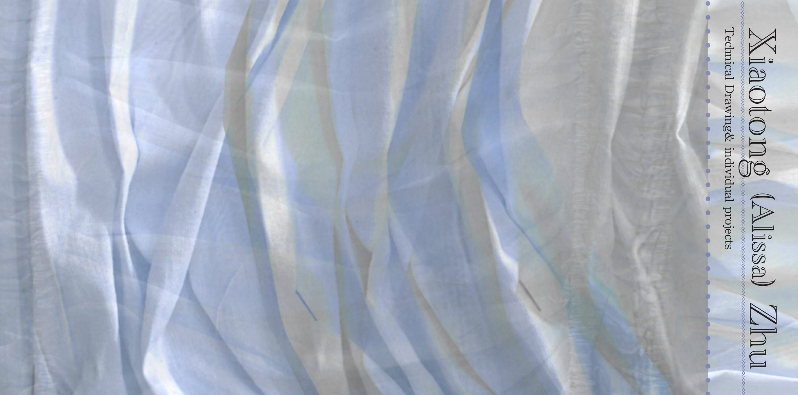

Fashion Design Portfolio
Technical Drawing & Individual Projects
Designer Statement
I design garments that begin as research and end as movement. Translating the textures of cities, histories, and overlooked spaces into draped, constructed, and reassembled form.
My work moves fluidly between hand illustration, flat technical drawing, CLO 3D simulation, draping, and textile experiments. Each project below traces a complete process. From concept and field research to development, fitting, and final shoot.
01 — Studio Practice
A study in fluidity and silhouette. Fluid float panels, draped sashes, and sculptural sleeves are explored across hand illustration, front-and-back flats, and CLO 3D garment simulation: A self-authored narrative built around flow.
02 — Conceptual Collection
Behind Hong Kong's bustling prosperity lie hidden, invisible narrow spaces. Driven by curiosity about the city's housing, my research revealed a stark disparity between rich and poor. Subdivided apartments where residents live in crowded, confined rooms. I simulated those compressed conditions through body experiments, iron-mesh sculpture, woven textiles, and negative-cutting draping.
03 — Conceptual Collection
Inspired by the witch hunts driven by a fear of strong women, the all-female night bomber regiment of WWII the German army called the "Night Witches." These aviators had no uniforms of their own, wearing ill-fitting menswear into battle. The collection investigates the gap between men's uniforms and women's bodies through pattern study, rust-dyeing, aging techniques, and reassembled silhouettes.